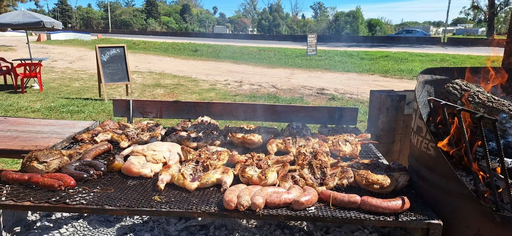
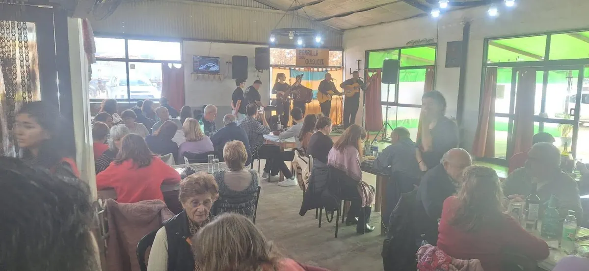
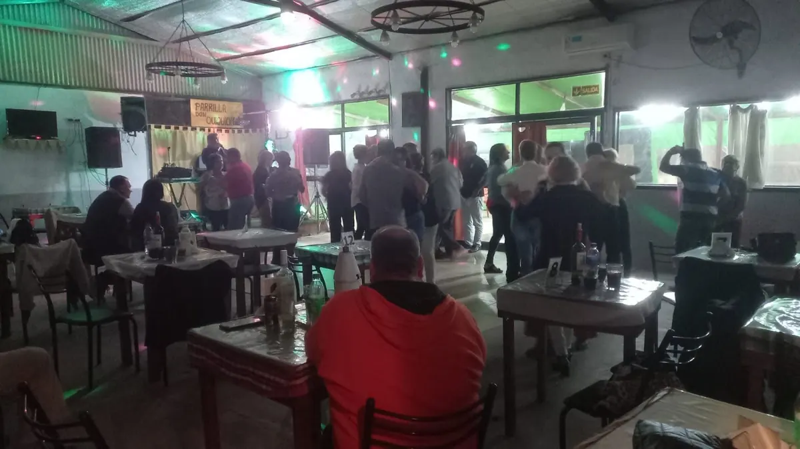
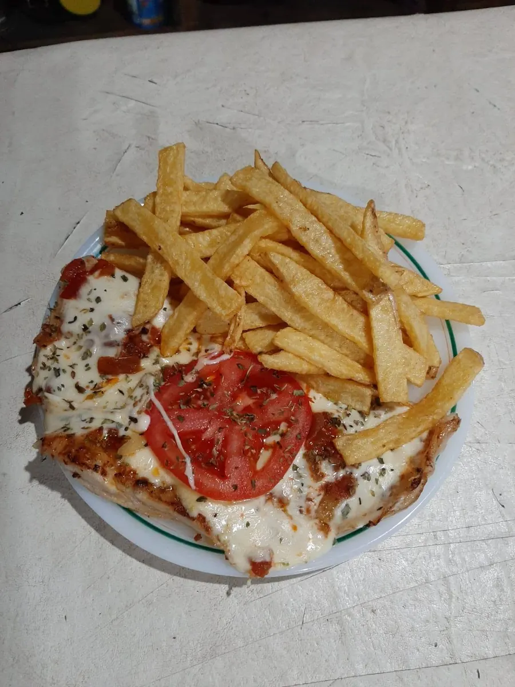
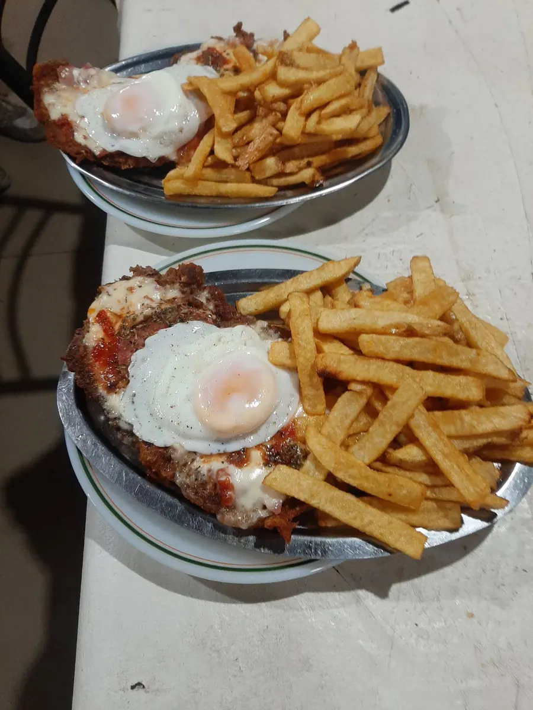
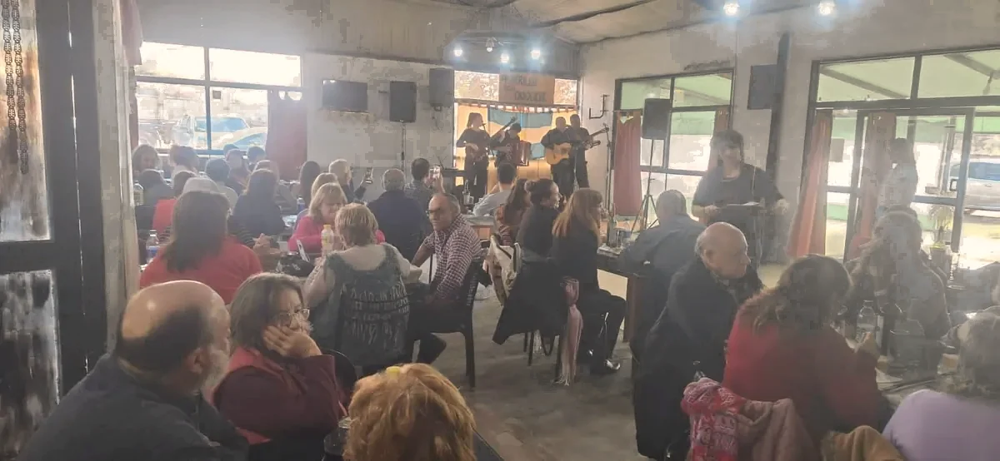

Ruta 39 · Concepción del Uruguay
01 FUEGO ABIERTO
Don
Quiquiche
Parrilla, mesa y música.
Una parada con espíritu propio.
Se llega por la ruta.
Se queda en la mesa.
Don Quiquiche es parrilla y ambiente familiar, con espíritu de peña. Un lugar para juntarse: a comer, conversar y, cuando hay fecha, escuchar música.
Hablemos por WhatsAppUna dirección sobre Ruta Provincial 39, Concepción del Uruguay.
El fuego
marca el ritmo.
Una propuesta de parrilla y asado para compartir. La carta actual puede variar: consultala directamente antes de venir.
- Asado
- Parrillada
La noche empieza
cuando llega la
parrillada.
DON QUIQUICHE / ENTRE RÍOS

Foto real del localComer es
el comienzo.
En distintas ocasiones, la mesa se corre y aparece la música en vivo. Consultá las próximas fechas.
Fotos




La mesa
te espera.
Confirmá horarios y disponibilidad antes de venir. Especialmente en fechas especiales.
HORARIOS PÚBLICOS
- Lunes a viernes
- 11:00–15:00 · 20:00–00:00
- Sábado
- 11:00–04:00
- Domingo
- 11:00–15:00
Pueden variar. Consultá antes de venir.
Nos vemos
en la ruta.
Ruta Provincial 39, Concepción del Uruguay, Entre Ríos39